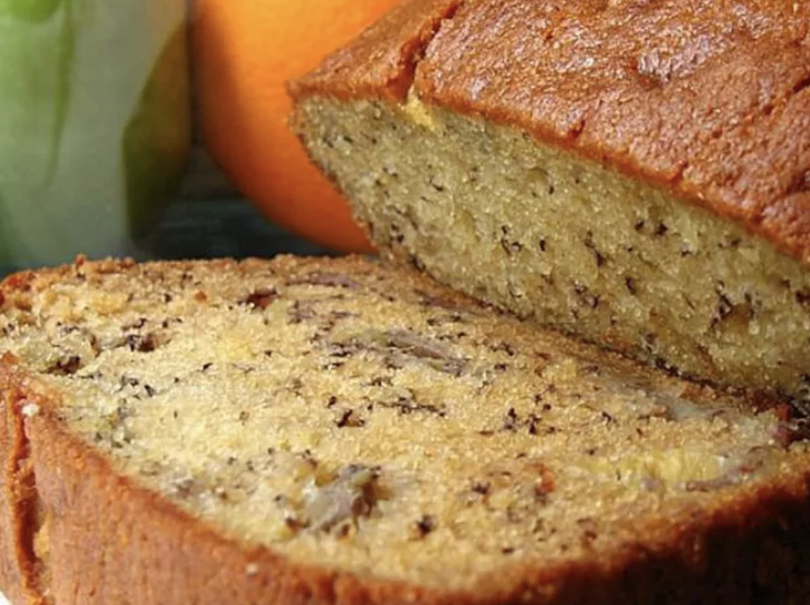

Banana Bread

Description
This moist banana bread is the best I've ever tasted. It's also very easy to make!
Looking for a moist banana bread recipe that never fails? Your friends and family will ask for this never-dry banana bread again and again.
To make this perfectly moist banana bread, you’ll need the following ingredients, many of which you may already have on hand: sugar, butter, eggs, vanilla, all-purpose flour, baking soda, salt, sour cream, walnuts (optional), and of course ripe bananas.
The secret to this melt-in-your-mouth banana bread? Sour cream. The eggs and butter (and the bananas themselves) lend moisture, but the rich and tangy sour cream takes the texture over the top.
Ingredients & Quantity
- 1 cup white sugar
- ½ cup butter, melted
- 2 large eggs
- 1 teaspoon vanilla extract
- 1 ½ cups all-purpose flour
- 1 teaspoon baking soda
- ½ teaspoon salt
- ½ cup sour cream
- ½ cup chopped walnuts
- 2 medium bananas, sliced
Directions
- Gather all ingredients. Preheat the oven to 350 degrees F (175 degrees C). Grease a 9x5-inch loaf pan.
- Stir sugar and melted butter together in a large bowl. Add eggs and vanilla; mix well. Combine flour, baking soda, and salt; stir into butter mixture until smooth.
- Fold in banana slices, sour cream, and walnuts; transfer into the prepared pan.
- Bake in the preheated oven until a toothpick inserted into the center of the loaf comes out clean, about 1 hour.
- Cool loaf in the pan for 10 minutes before inverting onto a wire rack to cool completely.
- Serve and enjoy!
Accueil